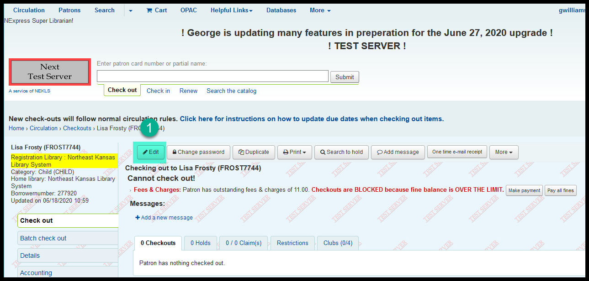
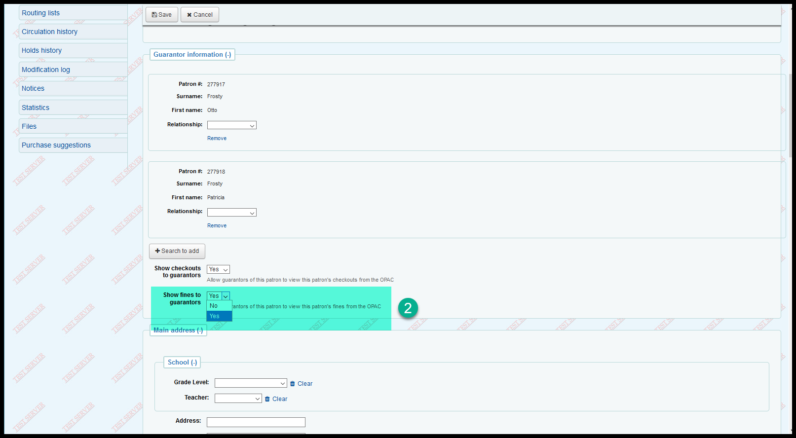
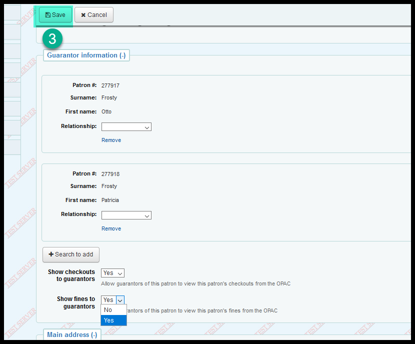
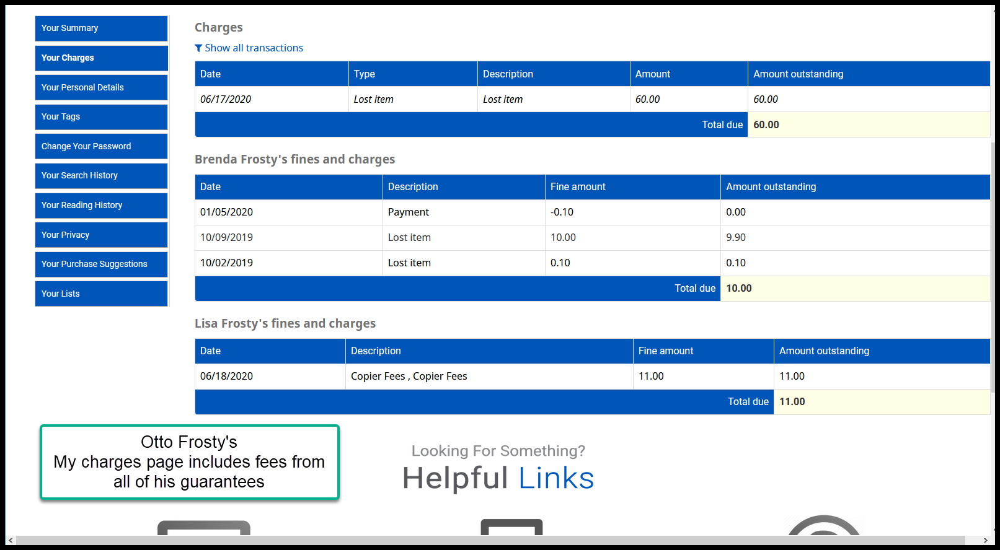
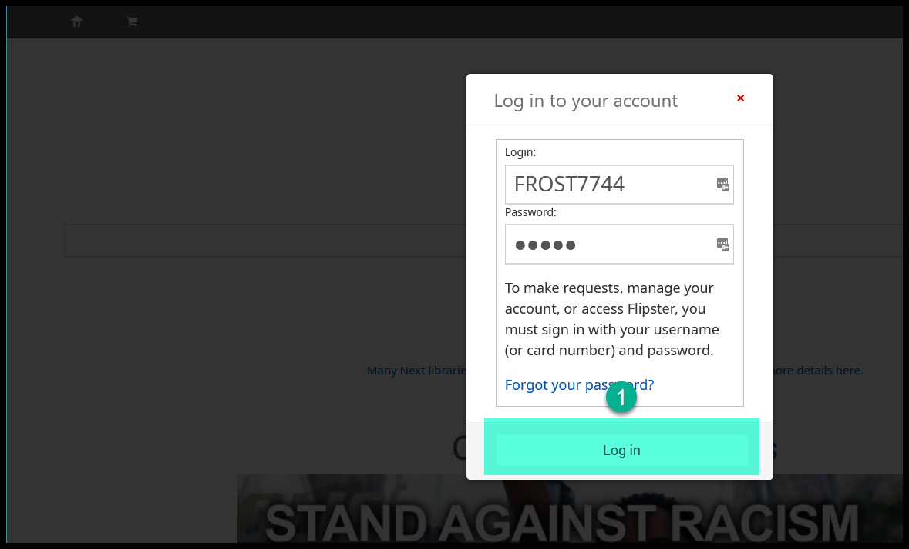
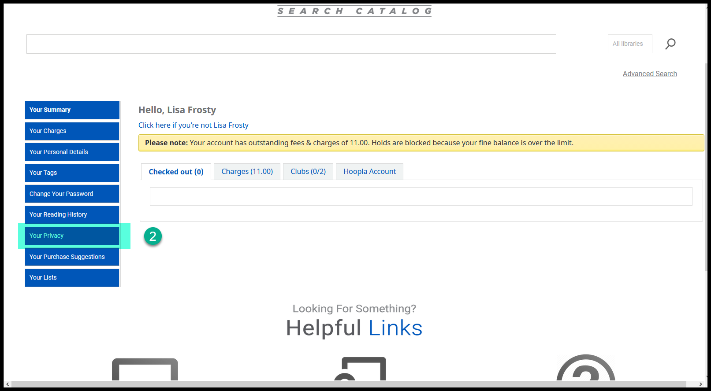
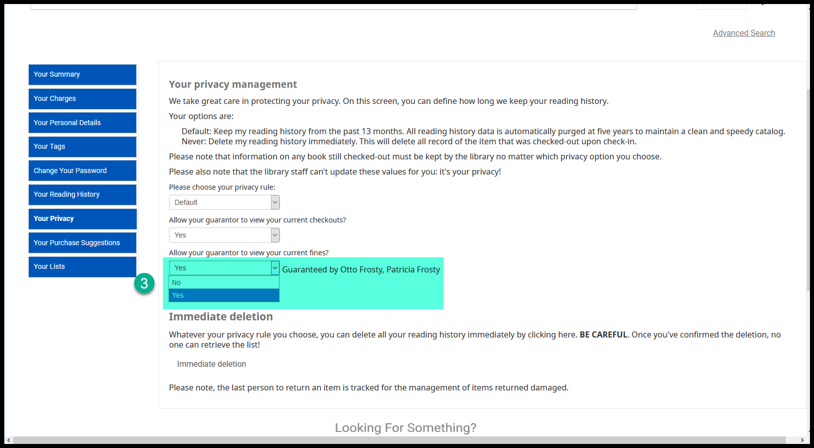
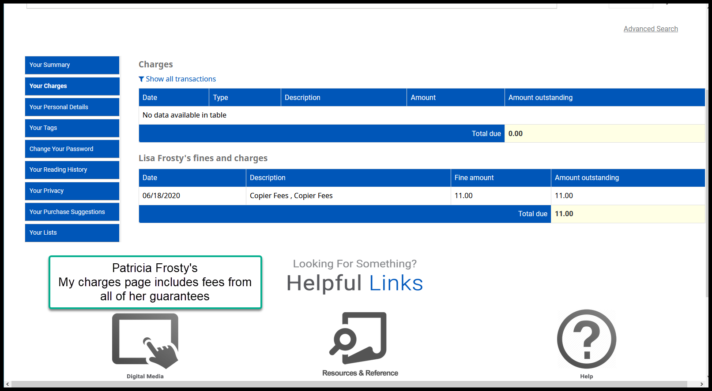

Ability to see and pay guarantee fees in the OPAC¶
If a patron acts as the guarantor to one or more child patrons and those child patrons owe greater than $10.00 in late fees, the adult patron will be blocked at circulation. If the guarantees have the “Show checkouts to guarantors” flag set to “Yes” on their account, the adult guarantor will be able to see items checked out to that guarantee in the OPAC, but they will not see the guarantee’s fees.
A new setting has been added called “Show fines to guarantors” that will let guarantees agree to allow their adult guarantors to also see their late fees in the OPAC.
“Show fines to guarantors” control¶
In the staff client¶
In the patron’s account in the staff client, click on “Edit”

In the “Guarantor information” area, set “Show fines to guarantors” to Yes

Click on “Save”

From the guarantor’s account in the OPAC, the guarantor will now be able to see any fees owed by this guarantee in the “My charges” tab on their account

In the OPAC¶
The patron needs to log into the OPAC

Click on the “Your privacy” tab - this setting will also list all of the patron’s guarantors

Once in the “Your privacy” tab, the patron needs to set “Show fines to guarantors” to Yes and then click on “Save”

Click on “Save”
From the guarantor’s account in the OPAC, the guarantor will now be able to see any fees owed by this guarantee in the “My fines” tab on their account
Questions:¶
Q: If the patron has more than one guarantor, will both guarantors be able to see the guarantee’s fees?
A: Yes

Q: Will the guarantor be able to use PayPal to pay fees for themselves and their guarantees?
A: Yes. The guarantor will be able to pay any checked fee on the page via PayPal.
(No screenshot is available because PayPal is turned off in the test server)
Q: I have a patron that is looking at their account in the OPAC and they can’t see the fees for their guarantees. How come?
A: “Show fines to guarantors” will not be enabled for any pre-existing patrons. If the patron’s account was in Next before the upgrade, their “Show fines to guarantors” preference will be set to “No” when we upgrade. After the upgrade staff or the patron will need to change the setting to “Yes” manually on an as needed basis.
Q: Why is the patron allowed to change their own “Show fines to guarantors” setting in the OPAC.
A: This is one of the standard privacy settings in Koha that gives patrons control over their own data and how its used.